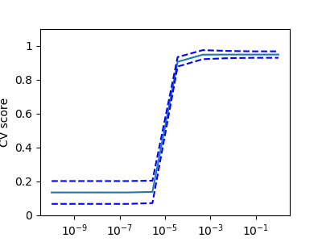

模型选择: 选择合适的估计器及其参数¶
Score, 和 cross-validated scores¶
正如我们所看到的，每个估计器都暴露了一个 score 方法，可以根据新的数据判断拟合(或预测)的质量。
得分越大就表示模型拟合的越好.
>>> from sklearn import datasets, svm
>>> digits = datasets.load_digits()
>>> X_digits = digits.data
>>> y_digits = digits.target
>>> svc = svm.SVC(C=1, kernel='linear')
>>> svc.fit(X_digits[:-100], y_digits[:-100]).score(X_digits[-100:], y_digits[-100:])
0.98
为了对模型的预测精度有一个更好的度量(我们可以把它作为模型拟合优度的代理)，我们可以连续地将数据分割成用于训练和测试的折(folds):
>>> import numpy as np
>>> X_folds = np.array_split(X_digits, 3)
>>> y_folds = np.array_split(y_digits, 3)
>>> scores = list()
>>> for k in range(3):
... # We use 'list' to copy, in order to 'pop' later on
... X_train = list(X_folds)
... X_test = X_train.pop(k)
... X_train = np.concatenate(X_train)
... y_train = list(y_folds)
... y_test = y_train.pop(k)
... y_train = np.concatenate(y_train)
... scores.append(svc.fit(X_train, y_train).score(X_test, y_test))
>>> print(scores)
[0.934..., 0.956..., 0.939...]
上述方法被称作K-折交叉验证( KFold cross-validation).
交叉验证生成器¶
Scikit-learn 提供了好多的类，这些类可以根据不同的交叉验证策略来生成 train/test indices 的列表。
这些类提供了一个 split 方法，该方法接受将要被分割的输入数据然后根据选定的交叉验证策略在每个迭代步都产生train/test 集合的索引切片。
下面的例子展示了 split 方法的使用。
>>> from sklearn.model_selection import KFold, cross_val_score
>>> X = ["a", "a", "a", "b", "b", "c", "c", "c", "c", "c"]
>>> k_fold = KFold(n_splits=5)
>>> for train_indices, test_indices in k_fold.split(X):
... print('Train: %s | test: %s' % (train_indices, test_indices))
Train: [2 3 4 5 6 7 8 9] | test: [0 1]
Train: [0 1 4 5 6 7 8 9] | test: [2 3]
Train: [0 1 2 3 6 7 8 9] | test: [4 5]
Train: [0 1 2 3 4 5 8 9] | test: [6 7]
Train: [0 1 2 3 4 5 6 7] | test: [8 9]
然后，可以轻松地执行交叉验证
>>> [svc.fit(X_digits[train], y_digits[train]).score(X_digits[test], y_digits[test])
... for train, test in k_fold.split(X_digits)]
[0.963..., 0.922..., 0.963..., 0.963..., 0.930...]
交叉验证得分(The cross-validation score)可以使用函数 cross_val_score 直接计算。
给定一个 estimator,一个cross-validation 对象以及一个输入数据集，函数 cross_val_score 将重复的
把整个数据集分割成训练集和测试集，然后每一个迭代步都在不同的训练集上训练模型，在不同的测试集上测试模型。
最终计算出所有迭代步的测试集上的平均分。
默认情况下，估计器的 score 方法 被用来计算模型在每个独立的测试集上的得分。
参考 metrics module 学习更多的评分测度。
>>> cross_val_score(svc, X_digits, y_digits, cv=k_fold, n_jobs=-1)
array([0.96388889, 0.92222222, 0.9637883 , 0.9637883 , 0.93036212])
n_jobs=-1 意味着计算将被分发到计算机的所有CPU kernels 上。
我们还可以为 scoring 参数 指定其他的评分方法，如 precision_macro。
>>> cross_val_score(svc, X_digits, y_digits, cv=k_fold, ... scoring='precision_macro') array([0.96578289, 0.92708922, 0.96681476, 0.96362897, 0.93192644])Cross-validation generators
KFold (n_splits, shuffle, random_state) |
StratifiedKFold (n_splits, shuffle, random_state) |
GroupKFold (n_splits) |
| Splits it into K folds, trains on K-1 and then tests on the left-out. | Same as K-Fold but preserves the class distribution within each fold. | Ensures that the same group is not in both testing and training sets. |
ShuffleSplit (n_splits, test_size, train_size, random_state) |
StratifiedShuffleSplit |
GroupShuffleSplit |
| Generates train/test indices based on random permutation. | Same as shuffle split but preserves the class distribution within each iteration. | Ensures that the same group is not in both testing and training sets. |
LeaveOneGroupOut () |
LeavePGroupsOut (n_groups) |
LeaveOneOut () |
| Takes a group array to group observations. | Leave P groups out. | Leave one observation out. |
LeavePOut (p) |
PredefinedSplit |
| Leave P observations out. | Generates train/test indices based on predefined splits. |
练习
在 digits 数据集上, 绘制带有线性核函数的 SVC 估计器的交叉验证得分。交叉验证得分为纵轴，横轴是参数 C (use a
logarithmic grid of points, from 1 to 10).
import numpy as np
from sklearn.model_selection import cross_val_score
from sklearn import datasets, svm
digits = datasets.load_digits()
X = digits.data
y = digits.target
svc = svm.SVC(kernel='linear')
C_s = np.logspace(-10, 0, 10)
网格搜索与交叉验证估计器¶
网格搜索¶
scikit-learn 提供了一个对象，当estimator在一个参数网格上根据给定的数据不断拟合的时候， 该对象可以计算模型在每个网格节点的得分，并且选择能够最大化交叉验证得分的那一组参数。这个 对象在构造的时候需要传入一个estimator,而且向外提供了estimator的API:
>>> from sklearn.model_selection import GridSearchCV, cross_val_score
>>> Cs = np.logspace(-6, -1, 10)
>>> clf = GridSearchCV(estimator=svc, param_grid=dict(C=Cs),
... n_jobs=-1)
>>> clf.fit(X_digits[:1000], y_digits[:1000])
GridSearchCV(cv=None,...
>>> clf.best_score_
0.925...
>>> clf.best_estimator_.C
0.0077...
>>> # Prediction performance on test set is not as good as on train set
>>> clf.score(X_digits[1000:], y_digits[1000:])
0.943...
默认情况下， GridSearchCV 类使用3-fold交叉验证。然而，如果它发现传入的estimator是一个分类器而不是回归器，他将会使用
stratified 3-fold。 该默认值在sklearn0.22 版本 将会变为 5-fold cross-validation。
Nested cross-validation
>>> cross_val_score(clf, X_digits, y_digits)
array([0.938..., 0.963..., 0.944...])
Two cross-validation loops are performed in parallel: one by the
GridSearchCV estimator to set gamma and the other one by
cross_val_score to measure the prediction performance of the
estimator. The resulting scores are unbiased estimates of the
prediction score on new data.
Warning
You cannot nest objects with parallel computing (n_jobs different
than 1).
自带交叉验证的估计器¶
设置参数的交叉验证可以在逐算法的基础上更有效地完成。这就是为什么对于某些估计器，Scikit-Learn 暴露 交叉验证:评估估计器的性能 的估计器以便使用 cross-validation自动设置他们的参数
>>> from sklearn import linear_model, datasets
>>> lasso = linear_model.LassoCV(cv=3)
>>> diabetes = datasets.load_diabetes()
>>> X_diabetes = diabetes.data
>>> y_diabetes = diabetes.target
>>> lasso.fit(X_diabetes, y_diabetes)
LassoCV(alphas=None, copy_X=True, cv=3, eps=0.001, fit_intercept=True,
max_iter=1000, n_alphas=100, n_jobs=None, normalize=False,
positive=False, precompute='auto', random_state=None,
selection='cyclic', tol=0.0001, verbose=False)
>>> # The estimator chose automatically its lambda:
>>> lasso.alpha_
0.01229...
这些估计器的调用方式与对应的estimator是类似的，只是名字后面多了一个 ‘CV’。
练习
在糖尿病数据集上, 找到最优正则化参数： alpha.
Bonus: 你对你选择的 alpha 参数有多信任 ?
from sklearn import datasets
from sklearn.linear_model import LassoCV
from sklearn.linear_model import Lasso
from sklearn.model_selection import KFold
from sklearn.model_selection import GridSearchCV
diabetes = datasets.load_diabetes()